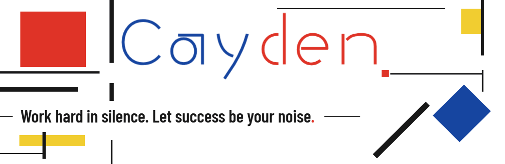

关于我
保持好奇，也把想法做出来。
我是 Cayden，目前在华南理工大学学习，关注知识检索、AI 应用与推荐系统。
我喜欢把模型与数据放进具体的使用场景，在实践中理解技术，把想法做成可以使用的东西。
目前正在学习英语和西班牙语，会继续学习更多语言，希望能有机会和不同文化背景的人交流。
一些作品
SELECTED WORK / 01—03RAG ↗
让本地知识可检索，让 Agent 能动手。
围绕本地知识库构建检索与问答流程，以稠密检索 + BM25 组合召回，通过 RRF 融合结果。结合工具调用与 MCP，探索从获取信息到执行操作的完整流程。
FastAPI · PocketFlow · Dense + BM25 · RRF · MCP
本地知识库混合检索工具调用
REASON → ACT
MindTrace ↗日迹
你写下思考，AI 做你的镜子。
围绕日常记录与回顾展开的应用，探索 AI 如何帮助人重新阅读自己的想法，让记录成为理解自己的材料。
Next.js 14 · FastAPI · SQLite · DeepSeek
SASRec ↗
从过去的交互，预测下一次兴趣。
复现基于自注意力的序列推荐模型，在 MovieLens-1M 上学习序列建模与推荐评估。
PyTorch · MovieLens-1M
阅读文字版 / 复制项目介绍
关于我
保持好奇，也把想法做出来。
我是 Cayden，目前在华南理工大学学习，关注知识检索、AI 应用与推荐系统。
我喜欢把模型与数据放进具体的使用场景，在实践中理解技术，把想法做成可以使用的东西。
目前正在学习英语和西班牙语，会继续学习更多语言，希望能有机会和不同文化背景的人交流。
RAG ↗
让本地知识可检索，让 Agent 能动手。
围绕本地知识库构建检索与问答流程，以稠密检索 + BM25 组合召回，通过 RRF 融合结果。结合工具调用与 MCP，探索从获取信息到执行操作的完整流程。
FastAPI · PocketFlow · Dense + BM25 · RRF · MCP
MindTrace ↗日迹
你写下思考，AI 做你的镜子。
围绕日常记录与回顾展开的应用，探索 AI 如何帮助人重新阅读自己的想法，让记录成为理解自己的材料。
Next.js 14 · FastAPI · SQLite · DeepSeek
SASRec ↗
从过去的交互，预测下一次兴趣。
复现基于自注意力的序列推荐模型，在 MovieLens-1M 上学习序列建模与推荐评估。
PyTorch · MovieLens-1M